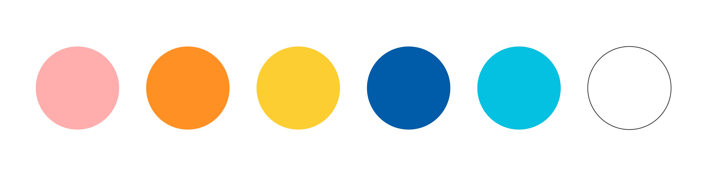
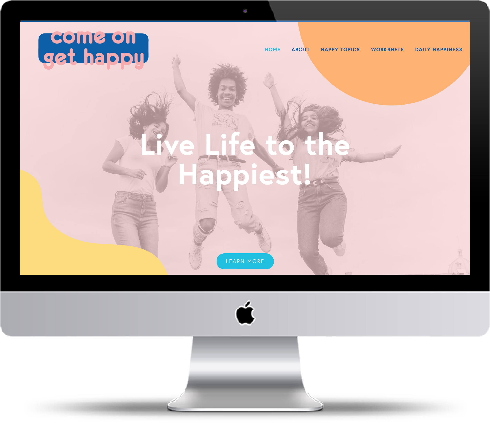

What truly makes us happy and what are ways
that we can live happier, healthier lives every day?
Come on Get Happy is a project that explores the happiness in our every day lives. The goal of the project is to inspire people to live their happiest lives every single day, in hopes that our increased happiness could positively affect the world. The idea is that if the average person is happier and healthier, our world will be happier and healthier too.
The 2018 World Happiness Report ranks 156 countries on their Happiness Index and the United States falls flat at number 18. I hope that by reminding people to focus on what truly makes them happy day-to-day we can increase the United State’s Happiness Index.
Come On Get Happy consists of a
The process for my project was made up of these main steps:
Survey users, narrow content, receive external feedback, develop branding and create elements
To ensure that Come On Get Happy is beneficial to the largest number of people, I conduted a survey using Google Forms and received 220 responses. The survey consisted of 2 open-ended questions and 25 multiple choice questions that asked users about their "happiness habits" and what makes them happiest in their every day lives.
You can see the full results from my survey here.
I received a lot of amazing information from the survey results, and decided to narrow my focus for Come On Get Happy to three main topics:
Personal Relationships
Healthy Habits
and Self Care
It was important that I narrow the focus of my project, because personal happiness can mean many different things for every person, but the survey results suggested that these three themes would resonate with the highest number of people.
A lot of the questions that came up during my process revolved around how to create something that would actually be useful and impactful to users.
I met with Melissa Sandford, a Life Coach and Counselor based in Chicago, and she gave great insight into how to go about creating change in people.
She suggested constant reminders and repetition. She shared that making lifestyle changes takes work at first, and it also takes reminding to put in the work (and why the work is important). This resulted in social media playing a larger role in my project, which resulted in the Come On Get Happy Instagram, which shares reminders, tools, quotes and more on living our lives to the happiest
Creating a solid branding was really important for the overall Come On Get Happy project. I wanted to develop a cohesive brand that could be eaily adapted across a wide range of products and elements and at the same time, make the audience feel happy and energized!
I created a brand that consisted of happy colors, a rounded typeface and fun shapes to reinforce my message of happiness.
here is a glimpse at my logo exploration:
And here is the final logo:
and final color palette:
Once the branding was established, I developed the Come On Get Happy elements. These consisted of:
A Motion Graphic Video
Infographics
PDF Worksheets
All of these elements can be found on Comeongethappy.net.
The bibliogprahy for my Capstone Project can be found here.